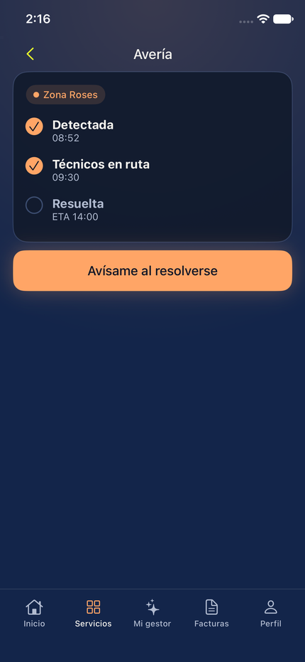
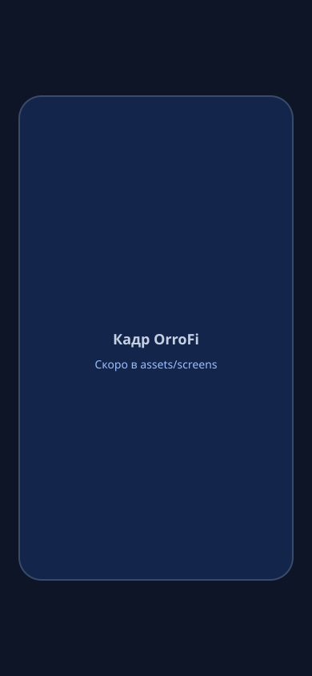
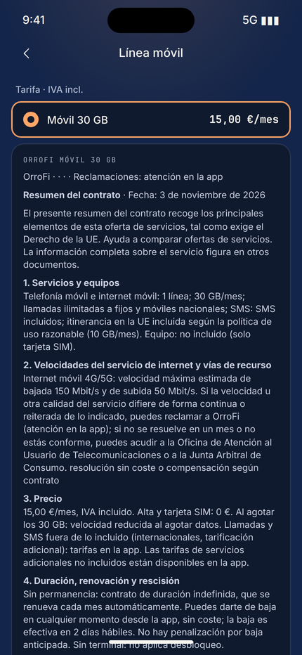
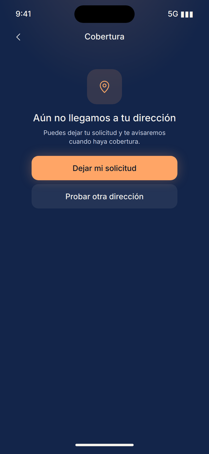

Сбой на линии
Сбой показан по шагам: его заметили, техники в пути, связь снова жива. Статус видно без звонка.

Оптика, радиодоступ, мобильная связь и домашний Wi‑Fi: как заказать, что делать при сбое и когда ждать мастера.
Сбой показан по шагам: его заметили, техники в пути, связь снова жива. Статус видно без звонка.

Подключение идёт своей дорогой: заказ принят, визит назначен, мастер в пути, услуга уже работает. На каком вы шаге, видно сразу.

Нужен другой день или другое окно. Заявку на перенос отправляете вы, а подтверждает её человек.

С этого экрана начинается заказ. Выбираете услугу и идёте к деталям, не собирая всё по телефону.

Календарь мастера: выбираете окно, когда вам удобно быть дома.

Заказ ушёл. Дальше за ним следят в ходе подключения, а не по ощущению «кажется, отправилось».

Новая мобильная линия: условия и согласия, прежде чем заявка уйдёт. Сумма на кадре — пример.

Линия заказана. Экран фиксирует, что заявка ушла, и на этом шаге можно выдохнуть.

Адрес, тариф и день визита собраны вместе, чтобы перечитать их до подтверждения. Сумма на кадре — пример.

Первый кадр встречает вас заставкой OrroFi и сразу отпускает дальше: ко входу или на главную, если телефон вас уже узнал.

Весь дом на одном экране: есть ли сбой, как связь, что с мобильным трафиком, когда ближайший платёж и не едет ли мастер.
Рядом Mi gestor и ваши услуги. Имя, адрес и суммы на кадре вымышлены, суммы — пример.
Вы ещё не абонент. Приложение смотрит адрес и говорит, дотягивается ли туда связь.

Если покрытия нет или адрес должен посмотреть человек, оставьте заявку. Она уходит, только когда вы сами её отправите.

Заявку взяли. Экран говорит об этом просто, и гадать, дошла ли она, уже не нужно.

По этому адресу услуги пока нет. Экран говорит об этом прямо.

Связи нет, но последние сохранённые сведения ещё перед глазами. Когда сеть вернётся, нажмите «Повторить».

Wi‑Fi со стороны договора: что оператор завёл вам домой. Пульт роутера живёт в другом месте, в Mi red.

Линии дома рядом: сколько данных осталось и когда пакет обновится. Цифры на кадре — пример.

Своего трафика мало. Здесь берут дополнительный пакет. Если на кадре есть цена, это пример.
Коды PIN и PUK открываются после Face ID и нужны, когда телефон просит разблокировать карту. Цифры на кадре вымышленные.

Там, где оптика не дотянулась, дом берёт радиодоступ. Видно, уверенный ли сигнал, и можно позвать мастера направить антенну.

Ваша оптика: какой тариф и жива ли связь. Отсюда можно перейти к заказу или в Mi red, если смотреть уже дом, а не услугу.